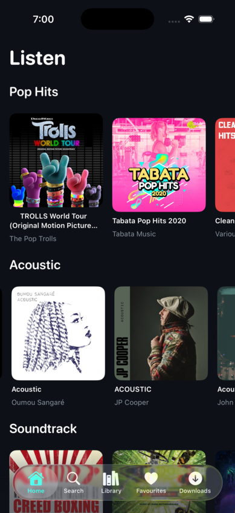
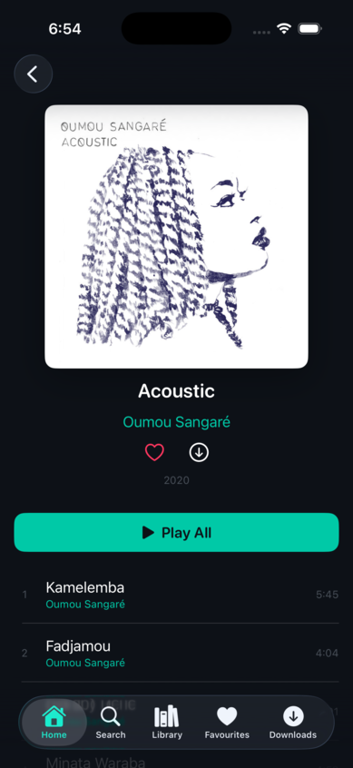

The App
What it looks like
Real screenshots from the v0.3.0-alpha running on iPhone 17 Pro simulator.

Home

Search

Album Detail

Swipe Actions
A native iOS app with structural parental controls for Tidal — two-layer explicit content filtering, boundary-based listening controls, and a privacy-first parent dashboard.
A parent with a family Tidal subscription wants to give their child a safe music streaming experience. Tidal has an explicit content toggle — but any user can re-enable it from within the app. iOS Screen Time's "Clean" restriction only applies to Apple Music, not third-party apps.
The result: either the child has unrestricted access to explicit content, or the parent resorts to fragile workarounds like Guided Access and Screen Time layering that an older child could circumvent.
Problem Statement: No structural mechanism exists to permanently filter explicit content in Tidal when a child uses their own iOS device unsupervised. This is a platform gap — not a configuration issue.
Constraints:
TeenTidal is a native iOS/iPadOS app that wraps Tidal's official SDK with structural content filtering — not a toggle the child can find and disable, but an architectural guarantee enforced at two independent layers.
Layer 1 — Server-side filtering: Every API request includes explicitFilter=EXCLUDE, preventing explicit content from ever reaching the device. Applied across all endpoints: search, album detail, artist tracks, artist albums, playlist items, and artist detail.
Layer 2 — Client-side deny-by-default: Every API response passes through FilteredCatalog, which strips any item where explicit != false. The deny-by-default approach means missing or null explicit flags are treated as explicit — content must be explicitly marked clean to pass. A belt-and-braces playback guard adds a final check before any track ID reaches the Tidal Player SDK.
Video content excluded entirely — server-side via content type filtering and client-side by removing all video navigation paths. No video content is ever presented to the child.
There is no settings screen. No toggle to disable. No deep link that bypasses the filter. The filtering is hardcoded into the architecture — it cannot be turned off without rebuilding the app.
TeenTidal's parental controls shape the listening environment without logging individual behaviour. A parent sets boundaries; the child operates freely within them.
Listening Hours — configurable start and end time (15-minute increments). Outside the window, playback is refused with a gentle banner. Supports inverted overnight ranges.
Daily Listening Limit — 15-minute-step budget that accumulates real playback seconds against a calendar day. Auto-resets at midnight. When the budget is reached, playback pauses.
Route-aware Volume Caps — separate caps for headphones (default 60%, aligned with AAP's "60/60 rule") and speakers (default 70%). Caps auto-switch when the audio route changes — unplugging headphones instantly applies the speaker cap. WHO/AAP-aligned colour zones (Safe/Caution/Loud/Very Loud) on each slider.
Evening Volume Override — optional second pair of volume caps that activate from a configurable start time until 4 AM. Default: 40% headphones, 50% speakers.
Auto-Sleep — after a configurable start time, continuous playback fades out over 3 seconds and pauses after a set duration (5–120 minutes).
Pause on Output Change — when headphones are unplugged, playback pauses immediately. Prevents the speaker blasting when headphones come out.
All time settings use 15-minute granularity, stored internally as minutes-from-midnight (0–1439) for precision.
A hidden 2-second long-press opens the parent dashboard, gated by a 4-digit PIN stored in the iOS Keychain (survives app reinstall). Brute-force protected: 5 failed attempts trigger a 60-second lockout with exponential backoff (capped at 1 hour), using constant-time string comparison to resist timing attacks.
Usage tab — aggregate statistics only: total plays, skip rate, total listening time, total searches. Time-of-Day chart and Listening-Per-Day breakdown. No individual track or artist history — the privacy-infringing sections (Top Tracks, Top Artists, Recent Searches) were deliberately removed in v0.8.0. A parent should know how much and when, not what.
Controls tab — all parental boundary settings: volume caps, listening hours, daily limit, evening override, auto-sleep, pause on output change, loudness normalisation toggle.
Diagnostics tab — MetricKit payloads (crashes, hangs, disk writes, CPU/memory, launch time) with read-only JSON viewer. Zero third-party SDKs.
Tidal requires all playback to use their official Player SDK, but the SDK's development mode returns PENotAllowed for streaming — making testing impossible without production credentials. TeenTidal solves this with compile-time backend separation:
SDK build (TeenTidal-SDK) — clean, Tidal-reviewable. Uses the official SDK for auth, playback, and events. This is the build submitted for Tidal developer programme review.
RE build (TeenTidal-RE) — reverse-engineered Tidal integration for development and testing. OAuth Device Code flow (RFC 8628) with QR code login. Stream URL acquisition via playbackinfopostpaywall/v4, BTS manifest parsing, AVPlayer playback with full queue management.
Protocol abstractions (AuthProvider, PlaybackProvider, TKCredentialsProvider) decouple all views from specific backends. #if TIDAL_SDK / #if TIDAL_RE guards plus EXCLUDED_SOURCE_FILE_NAMES in xcconfig ensure zero cross-leakage. Binary inspection verified: SDK build contains zero RE symbols; RE build contains zero SDK symbols.
A comprehensive security review produced 17 findings across 5 phases, all resolved:
Phase 1 — Content Safety:
explicitFilter=EXCLUDE added to every API endpointPhase 2 — Parental Control Hardening:
NSFileProtectionComplete, excluded from iCloud backup, extension whitelistPhase 3 — Credential Hardening:
WhenUnlockedThisDeviceOnlyPhase 4 — Network Hardening:
Phase 5 — Defence in Depth:
ReplayGain normalisation — parses trackReplayGain and trackPeakAmplitude from Tidal's stream metadata. Applied as pure attenuation via AVMutableAudioMix — never amplifies above unity. Target: −14 LUFS, matching Tidal's reference level. Consistent volume across tracks without parent intervention.
Real-time audio visualiser — Plexamp-style animated spectrum in the full player. MTAudioProcessingTap feeds PCM samples into vDSP_fft_zrip (1024-point FFT, Hann window). 28 log-scaled bars spanning ~60 Hz to ~16 kHz with fast-attack/slow-decay smoothing. Rolling-peak auto-normaliser prevents saturation on loud tracks. FFT is skipped entirely when the visualiser isn't visible.
Audio output picker — AVRoutePickerView in the full player header for switching between Bluetooth headphones, speakers, and AirPlay without leaving the app.
Real screenshots from the v0.3.0-alpha running on iPhone 17 Pro simulator.


A quick walkthrough of the discovery flow — browsing, searching, and navigating between screens.
Two-layer filtering architecture. OAuth 2.1 PKCE authentication. Tidal SDK integration. Three-tab layout with search, album detail, and basic playback. 15 unit tests covering FilteredCatalog and PlayerService.
Home tab with curated discovery carousels. Full search across tracks, albums, and artists. Playlist CRUD with local persistence. Design system (dark theme, teal accent, rounded fonts). iPad NavigationSplitView layout. Comprehensive QA pass: zero context menus, zero nested NavigationStacks, strict Swift 6.0 compliance.
Artist profiles with split content carousels. Similar Artists. Dedicated Favourites tab with directory structure. Downloads tab with offline queue. Two-tier persistent disk cache (L1 memory + L2 disk). All context menus replaced with swipe actions. PKCE-only public client (client secret removed from binary).
Protocol abstraction layer decoupling views from auth/playback implementations. SDK backend for Tidal review. RE backend with OAuth Device Code flow and reverse-engineered stream playback. Compile-time separation via #if guards + xcconfig exclusion. Binary verification: zero cross-leakage.
Personalised home page (For You, Custom Mixes, Radio Stations). Recently Played and Recent Searches. Offline downloads via CDN stream resolution. Full player enhancements (favourite, playlist, album navigation, stream quality badge). Artist bio v1 fallback. Release year display. Auto-enrich on play. 7 security hardening items including token refresh race elimination and URL path injection prevention.
PIN-gated parent dashboard with usage and diagnostics tabs. Local usage telemetry (play/skip/complete/search events, 90-day retention). MetricKit-based crash and performance diagnostics. Hidden admin access via long-press gesture.
ReplayGain loudness normalisation. Route-aware volume caps with WHO/AAP colour zones. Time-of-Day usage chart. Audio output picker. Real-time FFT visualiser with rolling-peak normalisation. Landscape split layout for full player.
Listening Hours, Daily Listening Limit, Evening Volume Override, Auto-Sleep, Pause on Output Change. All boundary-style — shape the environment without surveillance.
Tabbed search results with counts. Stronger client-side caching (24h catalog TTL, stale-while-revalidate, offline resilience). Belt-and-braces server+client explicit filtering on all endpoints. Video exclusion. View All grids for artist catalogues.
17 findings resolved across content safety, parental control hardening, credential hardening, network hardening, and defence in depth. Deny-by-default explicit filtering. PIN brute-force protection. Settings migrated to Keychain. Download storage secured. URL injection prevention. os.Logger with privacy annotations.
Parent Usage report stripped of privacy-infringing sections (Top Tracks, Top Artists, Recent Searches). All time settings migrated to 15-minute granularity with minutes-from-midnight storage. Privacy-first: a parent knows how much and when, not what.
TidalAPIClient with lenient Codable models avoids forking the SDK.Investigation: Early versions made 20+ individual track fetches per search query — one per result row to resolve artist names and album artwork.
Decision: Tidal's JSON:API include parameter lets you request related resources in a single response. Search now uses compound includes to get everything in one call.
Result: Search went from 20+ API calls to exactly 1.
Investigation: Browsing the app repeatedly hits the same endpoints. Without caching, every screen transition is an API call.
Decision: Two-tier cache: L1 (in-memory) for instant access, L2 (disk) to survive app restarts. TTLs tiered by volatility: catalogue 24 hours, search 30 minutes, discovery 6 hours. Stale-while-revalidate serves expired entries immediately while refreshing in the background. Offline resilience: expired entries served rather than discarded when the network drops.
Result: Repeat navigation is instant. API calls only fire when cache entries expire. L1 capped at 200 entries with batch eviction.
Investigation: Concurrent batch fetches via TaskGroup triggered HTTP 429 responses.
Decision: Batch fetches converted to sequential execution. HTTP 429 handler with exponential backoff (1s → 2s → 4s, respecting Retry-After, capped at 60s).
Result: Zero 429 errors in testing.
Investigation: Every keystroke in the search field would trigger an API call.
Decision: Search input debounced with 500ms delay. Previous search task cancelled when new input arrives.
Result: A typical search triggers 1 API call instead of 10+.
Investigation: The initial implementation included the client secret in the app binary.
Decision: Client secret removed entirely. TeenTidal operates as a PKCE-only public client. Tokens stored in iOS Keychain with WhenUnlockedThisDeviceOnly accessibility and iCloud sync disabled.
Result: No secrets in the binary. Tokens protected at rest.
TeenTidal is built to comply with Tidal's Developer Guidelines (v3.0) and Developer Terms of Service (v3.0). This section documents how each requirement is met.
Tidal requires that playback is only available through an official, unmodified version of the TIDAL Player SDK module. The SDK build uses the official tidal-sdk-ios Player module for all playback. The RE build exists for development only and is never distributed.
Tidal mandates OAuth 2.1 with PKCE for user authentication. The SDK build implements Authorization Code Flow with PKCE via ASWebAuthenticationSession. The RE build uses Device Code Flow (RFC 8628) for development convenience. Both store tokens in the iOS Keychain.
| Tidal Restriction | TeenTidal Compliance | |---|---| | No AI/ML use of content | No AI or machine learning features. Metadata used only for display and filtering. | | No visual synchronisation | No video sync or visual media output from audio content. Visualiser is FFT-only. | | No content mixing/remixing | Audio played unmodified through the official Player SDK. | | No data scraping | API used only for catalogue browsing and search. No bulk extraction. | | No competing service | TeenTidal is a parental filter layer, not a competing music service. | | No commercial use | Personal/family tool. Proprietary source code, not distributed. | | Branding compliance | Tidal branding and attribution included per Design Guidelines before public release. |
TeenTidal is currently in development mode. Moving to production requires formal review by Tidal including source code review. The application is parked pending this process.
TeenTidal's accessibility strategy delivers three purpose-built interaction modes — not retrofitted compliance, but first-class experiences. The framing is preference, never disability.
Feel It (haptic-first) — beat-synced haptics via CHHapticEngine, driven by the existing AudioAnalyzer FFT infrastructure. Bass energy extraction from low-frequency buckets (60–200 Hz) fires transient haptic events on beat onset. Intensity mapped to bass magnitude, sharpness mapped to frequency centroid. Distinct haptic signatures for every control action: single tap for play, double-tap for pause, rising sweep for skip forward, falling sweep for skip backward, three sharp taps for parental block. A visual beat pulse syncs with the haptics on the album artwork. No music app on iOS does beat-synced haptics for hearing-impaired users.
See It (visual accessibility) — WCAG 2.2 AA compliance across all screens. Dynamic Type scaling to .accessibilityXXXL without truncation. Full VoiceOver navigation with accessibility labels, values, hints, custom actions, and rotor support. High contrast mode, colour-blind safe volume zones (patterns alongside colours), Reduce Motion fallback, Bold Text support. Minimum 44×44pt tap targets on all interactive elements.
Hear It (audio-first) — enhanced VoiceOver announcements for track changes, queue position, and playback state. Audio navigation cues with distinct earcons for success, error, navigation, and selection. Spoken track metadata via AVSpeechSynthesizer. Simplified navigation layout with larger touch targets and prominent controls. Siri Shortcuts for hands-free control via App Intents.
No defaults. All three modes start disabled. The app gates on a mandatory first-launch selection — the child must actively choose at least one mode before proceeding. Pre-enabling any mode would privilege one sense over another and implicitly discriminate against users who don't share that sense. All three are presented on equal footing, no hierarchy, no assumed ability.
All three modes compose freely — a user can enable Feel It + See It simultaneously. Apple's accessibility services layer on top as refinements, not replacements. Mode preference stored locally in UserDefaults (the child's preference, not a parental control). Zero telemetry on mode usage.
Phase 1 (Feel It) and Phase 2 (See It) can run in parallel. Phase 3 (Hear It) depends on Phase 2's VoiceOver work.
| Version | Phase | Content | |---|---|---| | v0.8.1-alpha | Foundation | InteractionMode model, ModeSelectionView | | v0.9.0-alpha | Feel It | HapticBeatEngine, control signatures, visual beat indicator | | v0.10.0-alpha | See It | Dynamic Type, VoiceOver, high contrast, Reduce Motion | | v0.11.0-alpha | Hear It | Announcements, audio cues, simplified navigation | | v0.12.0-beta | Hardening | Security review, accessibility audit with real users | | v1.0.0-release | Ship | App Store submission |
TeenTidal is parked pending access to the Tidal developer programme for production credentials.
The app is feature-complete across discovery, library management, content filtering, parental controls,
and security hardening. Playback requires production mode — development credentials return
PENotAllowed for streaming operations.